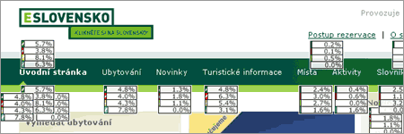

Zasytí předkrm od ClickTracks gurmány navyklé Google Analytics?
25. duben 2006, 22:36 Kategorie: Webova-analytika
... a vítězkou v soutěži o nejvíce hýčkanou profesi za rok 2006 je webová analytika.
Konkurence je krásná věc a po uvolnění slušného nástroje pro analýzu návštěvnosti webů, Google Analytics, reagují agilní ClickTracks se svou desktopovou ochutnávkou pod jménem Appetizer. Obojí zdarma. Pojďme si je porovnat z hlediska vlastnosti, která definuje moderní webovou analytiku.
ClickTracks Appetizer toho oproti Google Analytics a placeným verzím ClickTracks moc neumí, ale z mála ždíme maximum a hlavně ví, že útočit se má na soupeřovu slabou stránku. Tou je u Google Site Overlay. Ta samá vlastnost figuruje v ClickTracks pod názvem Navigation Report (jak to hezky říci česky?). Nechme mluvit obrázky:

Zatímco GA zobrazuje absolutní počet kliků u jednotlivých odkazů a na vyžádání pak také relativní vyjádření v procentech a konverzní poměr uživatelů, kteří takto klikli, …

… ClickTracks kromě přehledného procentuálního zobrazení umožňuje díky velké množině štítků například odlišit, jak klikají uživatelé obecně, příchozí ze Seznamu, Google a Centra jako na tomto obrázku.
Google Analytics navíc neumí vyhodnocovat klikací mapy, formuláře a další velmi časté součásti moderních webů.
Nevím, jak souboj analytických nástrojů bude probíhat dále. Jisté však je, že my se budeme mít dobře a že ClickTracks udělali krok pro to, aby jim Google neutekl. Navigation Report v Appetizeru budu používat namísto Analytics.
Ulož do delicious, linkuj.cz, jagg.cz, vybrali.sme.sk Díky!
Diskuze
[ RSS této diskuze ]
Jan Brašna, 27. 04. 06, 20:03, #
Martin Michálek, 27. 04. 06, 22:22, #
Martin Kopta, 28. 04. 06, 13:52, #
PVD, 28. 04. 06, 22:52, #
Yuhů, 29. 04. 06, 22:58, #
Misha, 30. 04. 06, 01:04, #
Misha, 30. 04. 06, 01:04, #
Martin Michálek, 30. 04. 06, 19:28, #
PVD, 30. 04. 06, 20:10, #
Misha, 30. 04. 06, 21:25, #
Martin Michálek, 01. 05. 06, 16:17, #
Martin Kopta, 02. 05. 06, 16:14, #
Misha, 02. 05. 06, 17:53, #
Martin Kopta, 02. 05. 06, 21:52, #
Komentáře jsou uzavřeny